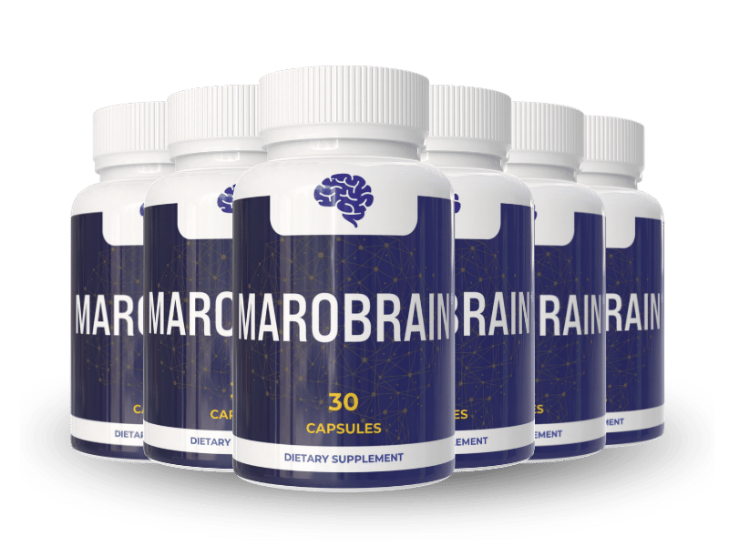

What Is Marobrain And How Does It Work?
Marobrain is designed to support sharper memory recall, sustained focus, and everyday mental clarity for adults who want to think more clearly and stay present in conversations and tasks — without turning to harsh stimulants or prescription-only cognitive aids.
It works through a focused combination of researched nootropics and B-vitamins that support healthy neurotransmitter activity and neural communication, helping the brain form and retrieve memories more efficiently while keeping mental energy steady throughout the day.
The formula is built around ingredients selected specifically for their role in memory formation, acetylcholine support, and stress resilience, which makes it particularly relevant for people who notice their concentration slipping under daily pressure, multitasking, or the natural effects of getting older.
Rather than promising an instant fix, Marobrain is built around gradual, cumulative support — the kind that builds up with consistent daily use and helps the brain hold on to steadier focus, clearer recall, and more dependable performance session after session.
With regular use, many people report catching names and details faster in conversation, finishing tasks without losing their train of thought, and feeling less mentally drained by the end of the day — small shifts that add up to a noticeably sharper day-to-day experience.
In practical terms, Marobrain is not a stimulant you feel kick in within minutes. It's a daily cognitive-support capsule meant to work quietly in the background, giving people a dependable foundation to stay sharp, confident, and engaged in the moments that matter.
Made without harsh synthetic stimulants and manufactured under GMP-certified quality standards, Marobrain is formulated for everyday use, giving people a natural, non-prescription way to support long-term brain health and mental performance.
Marobrain Ingredients
Every capsule of Marobrain combines nootropic botanicals with a high-potency B-vitamin base, chosen to support memory recall, mental energy, and calm, sustained focus as part of a daily routine.
- Bacopa Monnieri (20% Bacosides A&B): A cornerstone of traditional cognitive support, standardized for potency and included to support memory formation, learning, and long-term recall.
- Huperzine-A (from Huperzia Serrata): Supports healthy acetylcholine activity, a neurotransmitter central to memory, learning, and mental sharpness.
- Rhodiola Rosea (Root): A well-known adaptogen included to help the body manage stress and ease mental fatigue during demanding, high-pressure days.
- L-Tyrosine: An amino acid that fuels the production of dopamine and norepinephrine, two neurotransmitters essential for focus and mental performance under stress.
- Theacrine: A naturally occurring compound that supports sustained alertness and mental energy without the sharp spike-and-crash pattern common with plain stimulants.
- Theobromine: A gentle, naturally derived compound that works alongside the formula's other ingredients to smooth out and extend the sense of mental energy.
- Caffeine from Green Coffee Bean: Delivers a natural, gradual lift in alertness and mental drive, supporting focus without the jitteriness of synthetic caffeine.
- Vitamin B12 (Methylcobalamin, 1000% DV): Delivered in its most bioavailable form, essential for healthy nerve function and cognitive processing.
- Vitamin B6 (Pyridoxine HCL, 500% DV): Plays a key role in synthesizing neurotransmitters tied to mood, motivation, and cognitive performance.
Together, these ingredients work synergistically to support memory recall, mental clarity, and steady focus. Marobrain is formulated for daily use, with 30 capsules per bottle providing a full 30-day supply, offering a balanced approach to supporting brain performance without relying on aggressive stimulants.
Marobrain Side Effects
Marobrain is formulated for adults of different ages and lifestyles who want a natural, balanced way to support memory, focus, and mental clarity without leaning on harsh stimulants or prescription medications.
Every ingredient in the formula is selected and evaluated for purity and quality, helping keep the product free of unnecessary additives or harmful contaminants. According to the official website, Marobrain is manufactured in a GMP-certified facility in Aurora, Colorado, reinforcing consistency and product integrity from batch to batch.
With a growing base of daily users and no widespread reports of serious side effects when taken as directed, Marobrain is generally considered a well-tolerated option for people seeking ongoing cognitive support as part of a regular wellness routine.
As with any dietary supplement, people managing existing medical conditions or currently taking medication — particularly for blood pressure or blood clotting — should consult a healthcare professional before starting Marobrain, to make sure it fits safely into their personal health plan.
Marobrain Dosage
Marobrain is designed to fit easily into a daily routine, with each bottle containing 30 capsules — a full 30-day supply when taken as directed.
The recommended approach is one capsule per day, taken at the same time each day as part of a consistent routine. Many users choose to take it in the morning, so the formula's focus- and clarity-supporting ingredients are active through the busiest part of the day.
Consistency matters more than timing. Because ingredients like Bacopa Monnieri and Rhodiola Rosea build up gradually in the body, most users report the clearest changes appearing between weeks three and eight of uninterrupted daily use, with a full 90- to 180-day routine recommended to experience the formula's complete benefit.
There's no complicated schedule to follow and no need for multiple daily doses — just one capsule, taken consistently alongside good sleep habits, hydration, and regular mental activity.
Marobrain is available in three convenient packages, all sold as one-time purchases with no subscription or auto-billing: the 2-bottle Try Two option at $89/bottle ($178 total, shipping paid separately), the 3-bottle Popular 90-day supply at $72/bottle ($216 total, free shipping), and the 6-bottle 180-day supply at $49/bottle ($294 total, free shipping) — the lowest per-bottle price available.
As with any dietary supplement, it's important not to exceed the recommended dosage. Marobrain works best when used regularly as part of a long-term cognitive support and wellness routine.
Marobrain – Refund Policy
Every Marobrain order is backed by a 60-day, 100% money-back guarantee, giving customers the chance to try the formula risk-free and judge for themselves whether it fits their daily focus and memory routine.
If the results aren't what someone expected, they can request a full refund within 60 days of purchase — the process is kept simple, with no complicated hoops to jump through.
How the refund process works: Customers who want a refund simply reach out to Marobrain's support team within the 60-day window. According to the official website, there's no need to return unused bottles — the refund is processed once the request is confirmed.
Marobrain is produced in an FDA-registered, GMP-compliant facility, which reflects the manufacturer's broader commitment to consistency and quality — and backs up the confidence behind such a straightforward guarantee.
Customer Support Contact: Email: support@getmarobrain.com
Refund Processing Time: Once a refund request is approved, customers receive a confirmation email; depending on the bank or card issuer, the funds typically appear on the statement within a few business days.
This guarantee is designed to make trying Marobrain a low-risk decision, with a support process that stays transparent from request to refund.
Marobrain Customer Reviews
 Robert Harmon
Phoenix, AZ
Verified Purchase – 6 Bottles
Robert Harmon
Phoenix, AZ
Verified Purchase – 6 Bottles
"I kept blanking on names in client meetings, and at 58 that was mortifying — I'd shake someone's hand and lose their name three seconds later. A coworker mentioned Marobrain and I honestly didn't expect much from another supplement. By the fourth week I noticed I was pulling names and details out of conversations without that panicked scramble. By week seven I ran an entire quarterly presentation from memory, no notecards, and nobody in the room noticed the difference — but I did. My confidence at work is finally back."
"I was embarrassed to even bring it up — forgetting my own grandkids' names mid-sentence, losing the thread of a story halfway through telling it, checking the same recipe five times because I couldn't hold the steps in my head. My daughter noticed and got me a 3-bottle kit of Marobrain for my birthday, half joking, half hopeful. Six weeks in, I feel present again at the dinner table, in every conversation, without that constant fear of losing my place. It means more to my family than I think they realize."
 Thomas Caldwell
Denver, CO
Verified Purchase – 6 Bottles
Thomas Caldwell
Denver, CO
Verified Purchase – 6 Bottles
"I don't buy into supplements easily, so before ordering I looked into every ingredient — Bacopa Monnieri, Huperzine-A, Rhodiola Rosea — these are the compounds actually studied for memory and focus, and the doses in Marobrain weren't the token amounts I usually see. I've been taking it for five months now. My focus at work has noticeably improved, I actually retain what I read instead of rereading the same page three times, and the mental fog that used to follow me around most afternoons is basically gone."
Marobrain – Where To Buy
If you decide to try Marobrain, it's important to be careful about where you purchase it. Currently, Marobrain is not officially sold on marketplaces such as Amazon, eBay, or Walmart.
Some users have reported finding similar-looking bottles on third-party platforms, but these products may not be authentic. Purchasing from unofficial sellers can raise concerns about quality, safety, and ingredient integrity, and orders made outside the official source may not be covered by the manufacturer's 60-day money-back guarantee.
For this reason, most customers recommend purchasing Marobrain only through the official website. Ordering directly from the official source helps ensure you receive the genuine product, manufactured under proper quality standards, with access to customer support and refund protection.
To avoid unnecessary risks and ensure a safe experience, always verify that you are ordering from the official Marobrain website before completing your purchase.
To ensure you're getting the authentic product, most users choose to visit the official website directly.
Is Marobrain A Scam?
Based on a thorough analysis, Marobrain does not appear to be a scam. It is a legitimate, well-formulated cognitive-support supplement created to support memory recall, focus, and mental clarity as part of a consistent daily routine.
The ingredients used in Marobrain show promising potential in supporting memory formation, neurotransmitter activity, and sustained mental energy — key factors often associated with symptoms such as brain fog, forgetfulness, and mental fatigue.
In addition to using well-researched, carefully dosed ingredients, Marobrain is manufactured under strict quality controls and GMP-certified standards, helping ensure safety, consistency, and reliability with every bottle.
Many users from different backgrounds report improvements in memory recall, sustained focus, and day-to-day mental clarity, making Marobrain a practical option for those seeking a natural, non-prescription approach to long-term cognitive support.
Marobrain is backed by a 60-day money-back guarantee, allowing customers to try the product with confidence. This refund policy reflects the manufacturer's commitment to transparency and customer satisfaction.
If you're looking for a natural supplement to support memory and focus without relying on harsh stimulants or short-term fixes, Marobrain may be worth considering, especially when purchased directly from the official website.
For those who want to verify product details or check current availability, the official Marobrain website remains the safest and most reliable option.
